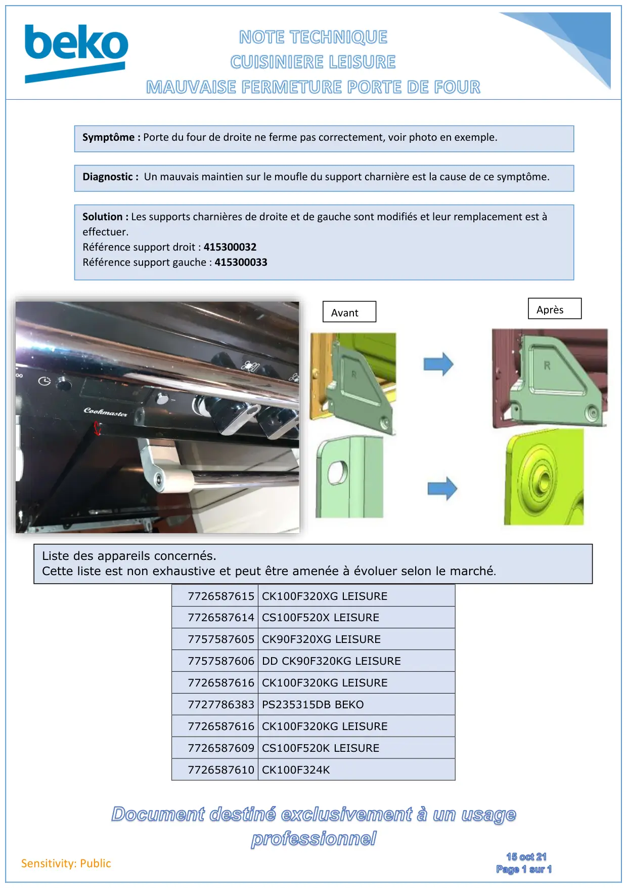

Note d'information mauvaise fermeture de porte four Leisure

Sensitivity: Public7726587615 CK100F320XG LEISURE7726587614 CS100F520X LEISURE7757587605 CK90F320XG LEISURE7757587606 DD CK90F320KG LEISURE7726587616 CK100F320KG LEISURE7727786383 PS235315DB BEKO7726587616 CK100F320KG LEISURE7726587609 CS100F520K LEISURE7726587610 CK100F324KSymptôme : Porte du four de droite ne ferme pas correctement, voir photo en exemple.Liste des appareils concernés.Cette liste est non exhaustive et peut être amenée à évoluer selon le marché.Diagnostic : Un mauvais maintien sur le moufle du support charnière est la cause de ce symptôme.Solution : Les supports charnières de droite et de gauche sont modifiés et leur remplacement est àeffectuer.Référence support droit : 415300032Référence support gauche : 415300033AvantAprès
1 / 1